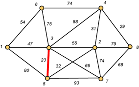
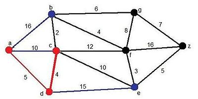
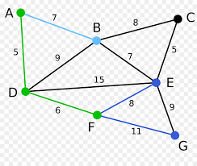
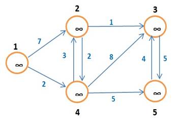
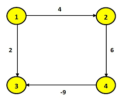
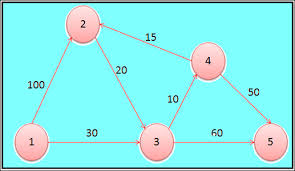
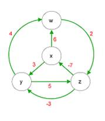
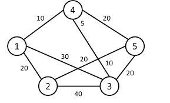

3. ALGORITMOS DE GRAFOS
3.1 Algoritmos elementales
3.2 Arboles de extensión minima
3.3 Camino más corto
3.4 Flujo Máximo
4. ALGORITMOS DE MANIPULACIÓN DE NÚMEROS Y CRIPTOGRAFÍA
4.1 Nociones básicas de teorias de números
4.2 Máximo común divisor
4.3 Aritmetica Modular
4.4 Sistema de criptografía de llave pública RSA
4.5 Prueba de números primos y determinación de factores enteros
4.6 Números exponenciales, comunes y primos
4.7 Números secretos y autenticos
4.8 Transformación de número
5. ALGORITMOS DE TÓPICOS SELECTOS
5.1 Geometría Computacional
5.2 Concordancia de Strings
ARBOLES DE EXPANSIÓN O EXTENSIÓN MÍNIMA.
Un árbol está compuesto por todos los vértices y algunos (posiblemente todas) de las aristas G. Al ser creado un árbol no existieran ciclos, además debe existir una recta entre cada par de vértices. Un árbol de expansión mínima es un árbol compuesto por todos los vértices y cuya suma de aristas es la de menor peso.
Kruskal
Es un algoritmo de la teoría de grafos para encontrar un árbol recubierto mínimo en grafo convexo y ponderado. Es decir, busca un subconjunto de aristas que formando un árbol incluyen todos los vértices y donde el valor de la suma de todas las aristas del árbol es el mínimo.

Dijkstra
Es un algoritmo por determinación del camino más corto dado un vértice origen hacia el resto de los vértices en un grafo que tiene pesos en cada arista.

Prim
Es un algoritmo perteneciente a la teoría de los grafos para encontrar un recubierto mínimo en un grafo convexo, no dirigido y cuyas aristas están etiquetados.

ALGORITMOS
Camino más corto según Dijkstra
Consiste en ir explorando todos los caminos más cortos que parten de vértice; cuando se obtiene el camino más corto desde el vértice de origen, al resto de vértices que componen el grafo, el algoritmo se detiene.

Camino más corto según Belmont-Ford
Genera el camino más corto en un grafo dirigido ponderado salvo que el grafo sea dirigido y sin ciclos.

Camino más corto según Floyd
El algoritmo de Floyd es más general que el de Dijkstra, ya que determina la ruta más corta entre dos nodos cualquiera de la red.

Camino más corto según Johnson
Es una forma de encontrar el camino más corto entre todos los pares de vértices de un grafo dirigido disperso.

Flujo Máximo Ford Fulkerson
El algoritmo de Ford-Fulkerson propone buscar caminos en los que se pueda aumentar el flujo, hasta que se alcance el flujo máximo. Es aplicable a los Flujos maximales. La idea es encontrar una ruta de penetración con un flujo positivo neto que una los nodos origen y destino. Su nombre viene dado por sus creadores, L. R. Ford, Jr. y D. R. Fulkerson.

NOCIONES
BÁSICAS DE LA TEORÍA DE LOS NÚMEROS
La teoría de números se resume en estudiar las propiedades de los números, los enteros en gran parte. Estas propiedades son del estilo: números primos, representaciones de números como sumas de otros, números irracionales, números trascendentes
El componente principal en la teoría de números, son los números primos.
Un número se dice primo si es diferente de uno y sus únicos divisores son uno y él mismo.
Los números primos forman el componente principal en el estudio de los números enteros, todo esto por el teorema fundamental de la aritmética
Todo número entero positivo se factoriza de manera única en el producto de potencias de números primos y existen infinitos números primos
MÁXIMO
COMÚN DIVISOR (M.C.D.)
El máximo común divisor (MCD) de dos o más número natural o enteros (no números con decimales) es el número más grande que les divide.
Para descubrir cuáles son los números que les divide existen dos formas: la forma larga y la forma corta. Esto lo explicaremos a través de un ejemplo. Ejemplo:
Forma larga
Máximo común divisor (MCD) de 10 y 20:
Divisor de 20: 1, 2, 4, 5, 10 y 20.
Divisor de 10: 1, 2, 5 y 10.
Importante: los divisores se sacan dividiendo, es decir, todo número que dividido por el número que estamos analizando de 0 en el resto
Vamos a ver cuáles son los números que coinciden que son:
Divisor de 20: 1, 2, 4, 5, 10 y 20.
Divisor de 10: 1, 2, 5 y 10.
Divisores de 10 y 20 son: 1, 2, 5 y 10.
El máximo común divisor sería el 10 porque es el número más grande que, a su vez, es divisor de ambos números (10 y 20).
Forma corta
Para número más grandes es más fácil hacer una descomposición en factores primos. Esta descomposición la empezamos siempre con el número más pequeño divisible del número que analizamos. Por ejemplo, para descubrir el máximo común divisor de 40 y 60. Escribimos el número que vamos a descomponer a la derecha (en este caso el 40) y seguidamente trazamos una recta vertical. Será detrás de esta donde colocaremos los factores primos empezando por el más pequeño. Haremos lo mismo con el 60.
¡Truco! Si quieres saber si has hecho bien la descomposición de factores primos se puede comprobar multiplicando. Empezando por abajo, multiplicas el último número de la izquierda (multiplicando) con el último de la derecha (multiplicador), el resultado debe ser el número de arriba del multiplicando.
Aritmética modular
Con las congruencias podemos establecer un conjunto de operaciones aritméticas, como:
Siendo a, b, c, d ∈ Z y m ∈ N, tales que a ≡ b (mod (m)) y c ≡ d (mod (m)). Entonces,
a
+ c ≡ b + d (mod (m))
a · c ≡ b · c (mod (m))
(Recordemos que el signo ≡ significa “congruente con” y no es lo mismo que el signo = que significa “igual a”)
A partir de esto, podemos definir las propiedades aritméticas para las sumas de congruencias:
Propiedad asociativa: a + (b + c) (mod (m)) = (a + b) + c (mod (m))
Elemento neutro: Existe un elemento 0 ∈ Zm, tal que a + 0 (mod (m)) = a (mod (m))
Elemento opuesto: Existe un elemento b ∈ Zm, tal que a + b = 0 (recordemos que 0 es el elemento neutro de la suma)
Propiedad conmutativa: a + b (mod (m)) = b + a (mod (m))
También podemos definir las propiedades aritméticas para el producto de congruencias:
Propiedad cancelativa: a · c ≡ b · c (mod (m)) y MCD (m, c) = 1, entonces a ≡ b (mod (m))
Propiedad asociativa: a · (b · c) (mod (m)) = (a · b) · c (mod (m))
Elemento neutro: Existe un elemento 1 ∈ Zm, tal que a · 1 (mod (m)) = a (mod (m))
Elemento inverso: Existe un elemento a-1 ∈ Zm para todo a ∈ Zm con MCD (a, m) = 1, tal que a · a-1 = 1 (recordemos que 1 es el elemento neutro del producto)
Además de todas estas propiedades también se cumple la propiedad distributiva: a · (b + c) (mod (m)) = (a · b) + (a · c) (mod (m))
Criptografía
Básicamente, a criptografía es la técnica que protege documentos y datos. Funciona a través de la utilización de cifras o códigos para escribir algo secreto en documentos y datos confidenciales que circulan en redes locales o en internet. Su utilización es tan antigua como la escritura. Los romanos usaban códigos para ocultar sus proyectos de guerra de aquellos que no debían conocerlos, con el fin de que sólo las personas que conocían el significado de estos códigos descifren el mensaje oculto.
A partir de la evolución de las computadoras, la criptografía fue ampliamente divulgada, empleada y modificada, y se constituyó luego con algoritmos matemáticos. Además de mantener la seguridad del usuario, la criptografía preserva la integridad de la web, la autenticación del usuario así como también la del remitente, el destinatario y de la actualidad del mensaje o del acceso.
¿QUE ES LA CRIPTOGRAFÍA?
Criptografía es la ciencia y arte de escribir mensajes en forma cifrada o en código. Es parte de un campo de estudios que trata las comunicaciones secretas, usadas, entre otras finalidades, para:
Autentificar la identidad de usuarios.
Autentificar y proteger el sigilo de comunicaciones personales y de transacciones comerciales y bancarias.
Proteger la integridad de transferencias electrónicas de fondos.
Criptografía: Claves Simétricas y Asimétricas
Las claves criptográficas pueden ser básicamente de dos tipos:
Simetricas: Es la utilización de determinados algoritmos para descifrar y encriptar (ocultar) documentos. Son grupos de algoritmos distintos que se relacionan unos con otros para mantener la conexión confidencial de la información.
Asimetricas: Es una fórmula matemática que utiliza dos llaves, una pública y la otra privada. La llave pública es aquella a la que cualquier persona puede tener acceso, mientras que la llave privada es aquella que sólo la persona que la recibe es capaz de descifrar.
Tipos de claves criptográficas
Criptografía de llave única: La criptografía de llave única utiliza la misma llave tanto para codificar como para decodificar mensajes. A pesar de que este método es bastante eficiente en relación al tiempo de procesamiento, o sea, el tiempo que gasta para codificar y decodificar mensajes, tiene como principal desventaja la necesidad de utilización de un medio seguro para que la llave pueda ser compartida entre personas o entidades que deseen intercambiar información criptografiada.
Criptografía de llaves pública y privada: La criptografía de llaves pública y privada utiliza dos llaves distintas, una para codificar y otra para decodificar mensajes. Con este método cada persona o entidad mantiene dos llaves: una pública, que puede ser divulgada libremente, y otra privada, que debe ser mantenida en secreto por su dueño. Los mensajes codificados con la llave pública solo pueden ser decodificados con la llave privada correspondiente.
Transformación de números.
En informática, la conversión alude al proceso de transformación de datos informáticos de una representación concreta a otra, cambiando los bits de un formato a otro, normalmente para lograr la interoperabilidad de aplicaciones o sistemas diferentes. Al nivel más simple, la conversión de datos puede ejemplificarse por la conversión de un archivo de texto desde una codificación de caracteres a otra. Son conversiones más complejas las de los formatos de ficheros ofimáticos y multimedia, a veces fuera de las capacidades de ordenadores domésticos (o a expensas de tiempos de proceso muy altos).
Concordancia de Strings.
Relacionado con la distancia de Levenstein: es posible que desee normalizar dividiendo el resultado con la longitud de la cadena más larga, de modo que siempre obtenga un número entre 0 y 1 y para que pueda comparar la distancia de un par de cadenas de una manera significativa. manera (la expresión L (A, B)> L (A, C) - por ejemplo - no tiene sentido a menos que usted normalice la distancia).